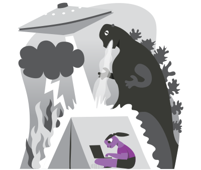

Despite everything, 2020 was a great year for Tails. We released major improvements that made Tails easier to use by the people who need it the most.
If you enjoyed our work in 2020, take a minute now to donate and fight surveillance and censorship!
From the number of automatic upgrades, we know that Tails was used 20% more in 2020 than in 2019, which is our largest increase since 2016. From March to May only, when the lockdown measures were the strictest worldwide, Tails got used 10% more than ever before.
Today, Tails is used close to 32 000 times each day.

Simplified starting procedure
We added support for Secure Boot in April. Secure Boot doesn't really make your computer any safer but it forced most users to edit their BIOS in complicated and risky ways to be able to use Tails (or Linux in general). Now you don't have to edit the BIOS anymore!
We also documented the Shift+Restart procedure to start Tails from
Windows 8 or 10 using the Start  menu. Now you don't have to hammer that Boot Menu key anymore!
menu. Now you don't have to hammer that Boot Menu key anymore!
All this dramatically simplified our starting instructions for PCs.

Better upgrades
Because we know that upgrades are one of the most painful aspects of using Tails, we released significant improvements to automatic upgrades in January. We made automatic upgrades:
Available from all prior versions to the latest version in a single upgrade.
For example, you can upgrade from 4.10 to 4.14 directly, without having to first upgrade to 4.12 anymore.
Available endlessly between minor versions of Tails.
For example, you don't have to do a manual upgrade anymore after a few upgrades. You will only have to do a manual upgrade between major versions, for example to upgrade to Tails 5.0 at the end of 2021.
Use less memory.
Better documented, especially manual upgrades.
But also…
We completely redesigned our Home page to explain better what is Tails and why people should use it.
We made it possible to save the settings of the Welcome Screen in the Persistent Storage: language, keyboard, and additional settings.

We simplified the verification procedure on our download page by replacing the Tails Verification extension with similar JavaScript code that runs directly on the page.
People without JavaScript are also now pointed to the checksum of the download.
We added support for the hardware cryptocurrency wallets Trezor and Ledger.
Under the hood
Unfortunately, the biggest part of our work doesn't lead to such major changes for our users. Tails is an endless work of updates and maintenance: publishing a new release every 4 weeks to fix security vulnerabilities, adapting to new versions of the underlying software, keeping our website and development infrastructure secure and reliable, etc.
We published more releases than ever. In 2020 we released 15 new versions of Tails to always have your back covered!
At the end of 2019, Firefox switched from releasing a new version every 6 weeks to releasing a new version every 4 weeks. And so did we.
We streamlined our release process by automating its most time-consuming parts. This reduced the work needed to publish a new release of Tails from 2 full days of work to only 1 day.
In the long run, this will help us spend more time on what really matters to our users and allow us to react faster to emergencies in case of security vulnerabilities.
We migrated to GitLab and saw many more of you jump in and give us a hand!
Ayúdanos a combatir la vigilancia y la censura

All our work is made possible by donations from people like you. We particularly appreciate monthly and yearly donations, even the smallest ones. Because they help us plan our work, they are the most valuable for the sustainability of Tails.
If you enjoyed our work in 2020, take a minute now to donate and fight surveillance and censorship!